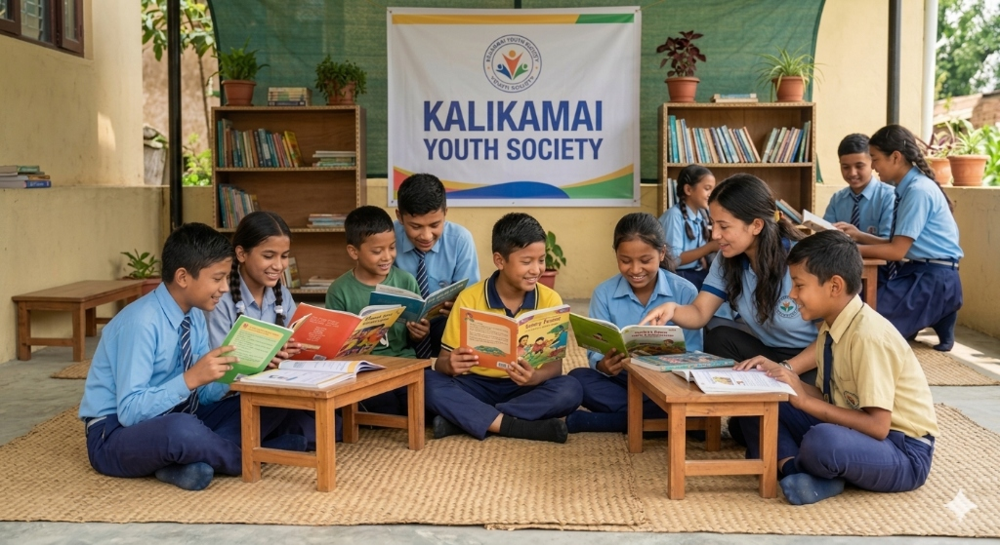

Kalikamai Youth Society: A non-governmental, youth-driven movement dedicated to transforming lives and empowering communities across Nepal.
Kalikamai Youth Society is a non-governmental, non-political, and independent association of youth. It operates under the prevailing laws and policies of the Government of Nepal.
The organization aims to unify youth power and enhance their skills and capacities through various activities. It seeks to lead youth collectively toward social transformation and work for the welfare of society.
To conduct awareness programs against social distortions and malpractices, and to build a developed society by uniting the youth community.
A Nepal where every youth has the skills, opportunity, and platform to contribute meaningfully to an empowered and self-reliant society.
Community-led and youth-driven. We coordinate with local bodies to run awareness campaigns and build lasting partnerships.
The principles that guide every action we take.
Preserving art, culture, customs, language, and traditional ways of life.
Fighting malpractices and advocating for a fair and equitable society.
Building skills and capacities that enable youth to lead change.
Kalikamai Youth Society started with a "Kalikamai Youth Society" taken by its founders in their early twenties to uplift their community.
Born out of a shared passion for social justice, what began as informal gatherings soon blossomed into a structured movement that now spans generations and multiple local districts.

Founders in their early twenties began small community efforts in Kalikamai RM, focusing on local issues.
Officially registered under the Organization Registration Act, 2080 B.S., becoming a recognized NGO.
Launched major tree plantation and awareness campaigns, mobilizing hundreds of local youth.
Evolving into a multi-generational organization with programs spanning healthcare and education.